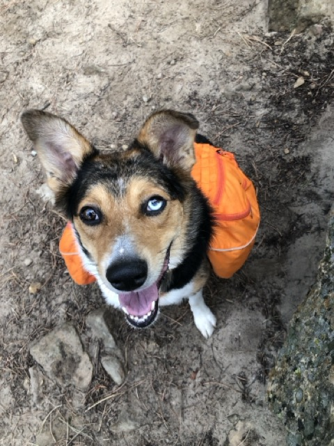
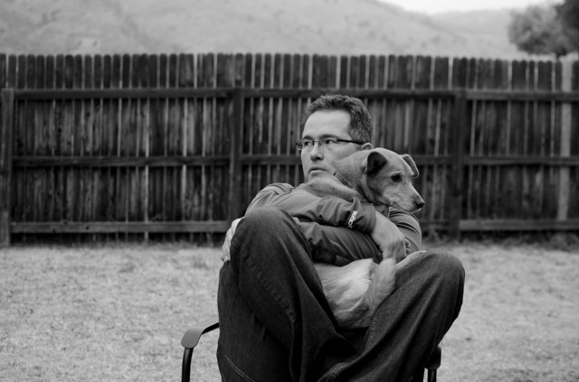

About Singleton Studios

Living in Wyoming and growing up with father who also loved amateur photography, I have always been drawn to the lure of lugging a bunch of camera equipment through the wilderness with a canine companion. My fondest memories have always been of days spent camping, hiking, and watching beautiful thunderstorms.

By day, I am boring database administrator doing boring database administrator things, but as soon as the work day is done, my focus is on the the important things in life: dogs, mountain hikes, and photography. Capturing beautiful shots of these moments brings me great joy, especially capturing the joy of my dogs as they experience the great outdoors.
While the modern cellphone has made photography accessible to everyone, I have always enjoyed the challenge of using an old-school camera. Being forced to consider aperture, exposure, and depth of field forces me to be deliberate and requires me to consider my subjects in ways that I don't when using my cell phone camera.

In 2024, I lost Miss Molly due to old age after 18 wonderful years. I found great solace in a portrait my fellow photographer friend took of Molly (left). That photo inspired me to start doing photoshoots for my friends and their senior dogs so that I could offer that same memorial honor to others.

I started producing large, high-resolution, well-framed prints on metal as memorial gifts for my friends. When one of my friends told me that every night her daughter says "Goodnight, Bruce." to the portrait I gave her eldest daughter of their dog, I knew that this was a service that was people truly valued and that I needed to share with everyone.